Capítulo 8. Las familias NoSQL
Los dos capítulos anteriores explicaron por qué existe NoSQL —la presión de la escala y el desajuste de impedancia— y cuánto cuesta la distribución que lo sostiene —la elección del CAP y la coherencia ajustable—. Toca ahora el catálogo: las familias concretas de almacenes que pagan ese coste, cada una con un modelo de datos distinto. No son cuatro versiones del mismo producto, sino cuatro respuestas a cuatro patrones de acceso. La tesis del capítulo, y su criterio de lectura, es que la familia se elige por el patrón de acceso dominante de la aplicación, no por moda: quien necesita buscar por clave usa clave-valor, quien recorre relaciones usa grafo, y confundir el patrón es elegir mal por mucho que el motor esté de actualidad.
Como en el capítulo anterior, el catálogo no se queda en la descripción: cada familia se presenta con la consulta que sabe responder bien y la que le resulta cara, y para tres de ellas esa diferencia se mide. El módulo de la práctica implementa maquetas en memoria —Python puro, sin servicio— de cada modelo y cronometra su fortaleza frente a su debilidad, de modo que las afirmaciones «el grafo recorre barato» o «el columnar agrega barato» dejan de ser eslóganes y se vuelven curvas. El recorrido va de la familia más simple a la más rica: clave-valor, documental, columnar ancha y grafo (figura 8.1), y cierra situando en el mapa las familias especializadas que el panorama actual ya no omite. El puente al capítulo 9 será mecánico: vistas las familias, queda ver cómo cualquiera de ellas se reparte de verdad entre muchos nodos.
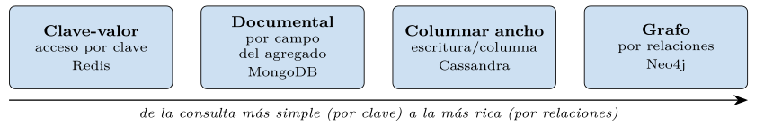
Clave-valor: la simplicidad y la latencia
La familia más simple guarda lo mínimo: una asociación entre una clave y un valor opaco, que la base almacena y devuelve sin mirar dentro (figura 8.2). Es, en esencia, un diccionario gigante y persistente. El valor puede ser un número, una cadena, un blob serializado o una estructura ligera, pero para la base es una caja negra: no puede consultar por su contenido, solo por la clave.
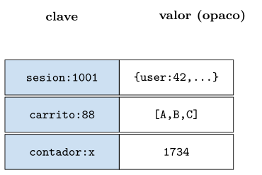
Esa renuncia es justo su fuerza. Sin esquema que validar ni contenido que indexar, el acceso por clave es de tiempo constante y latencia mínima, y por eso Redis —el representante canónico, heredero del linaje Dynamo (DeCandia et al. 2007) y, sobre todo, residente en memoria— es la elección por defecto para cachés, sesiones de usuario, contadores y colas ligeras. Su repertorio de operaciones es pequeño y directo (listado 8.1): leer y escribir por clave, incrementar un contador de forma atómica, manipular listas, y —rasgo muy usado— caducar una clave automáticamente pasado un tiempo, que es lo que hace de una caché una caché.
SET sesion:1001 "{user:42}" # guardar por clave
GET sesion:1001 # leer por clave (O(1))
INCR visitas:articulo:9 # contador atomico
LPUSH cola:correos "msg-1" # encolar por la izquierda
EXPIRE sesion:1001 3600 # caduca en una hora (TTL)Listado 8.1. Operaciones tipicas clave-valor (estilo Redis): leer/escribir por clave, contador atomico, lista y caducidad.
Que el acceso por clave sea constante no es una promesa, es algo medible (figura 8.3). La práctica compara buscar una clave en una tabla hash con recorrer una lista de pares: la tabla hash responde en un tiempo indiferente al número de claves —una línea plana, aunque haya cien o cien mil—, mientras que el barrido crece linealmente, hasta ser miles de veces más lento. Esa línea plana es la razón de existir de la familia.
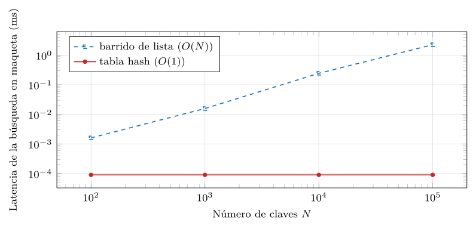
src/cap08_familias.py.El patrón más común que explota esta familia es la caché de paso lateral (cache-aside): antes de ir al almacén lento, se mira la caché; si el dato está —acierto—, se devuelve sin tocar la base; si no —fallo—, se lee de la base, se guarda en la caché con un tiempo de vida y se devuelve (listado 8.2). La caducidad automática es lo que evita que la caché sirva datos rancios para siempre, y el contador atómico es lo que permite, por ejemplo, limitar peticiones por usuario sin condiciones de carrera.
def leer_perfil(uid):
clave = f"perfil:{uid}"
val = kv.get(clave) # 1. mirar la cache
if val is not None:
return val # acierto: O(1), sin tocar la base
val = base.consultar(uid) # 2. fallo: ir al almacen lento
kv.setex(clave, 3600, val) # 3. guardar con caducidad (1 h)
return valListado 8.2. El patron cache-aside sobre un almacen clave-valor: mirar la cache, y solo ante un fallo ir a la base.
El flujo es el de la figura 8.4: la inmensa mayoría de las peticiones se resuelven en la caché y nunca llegan a la base lenta, que queda protegida del grueso del tráfico.
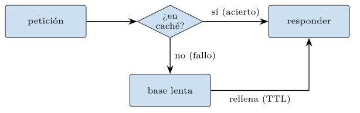
La debilidad es el reverso exacto de la fuerza: como el valor es opaco, no se puede preguntar «dame todas las sesiones del usuario 42» sin recorrer todas las claves, ni hay relaciones entre valores. La clave-valor brilla cuando se sabe exactamente qué clave se quiere y sufre cuando hay que buscar por contenido. Por eso rara vez es el único almacén de una aplicación: suele ser la capa rápida —la caché— delante de otro que sí sabe consultar.
Conviene matizar, eso sí, que «clave-valor» no significa «solo cadenas». Los motores reales ofrecen valores estructurados —listas, conjuntos, conjuntos ordenados, mapas— con operaciones atómicas sobre ellos, lo que cubre patrones muy usados sin dejar de acceder por clave (listado 8.4): un ranking en tiempo real es un conjunto ordenado por puntuación, y un limitador de peticiones es un contador que caduca. Siguen siendo accesos por clave —no se consulta por contenido—, pero la clave da acceso a una estructura, no a un byte opaco.
Que una caché pequeña —que solo cabe una fracción de los datos— sea útil no es obvio, y descansa en una propiedad real del acceso: rara vez es uniforme. Unas pocas claves —el artículo viral, el producto de moda, el usuario muy activo— concentran la mayor parte del tráfico, una distribución sesgada que la ley de Zipf describe bien. La práctica lo mide simulando doscientas mil peticiones sobre mil claves con acceso Zipf y una caché LRU de tamaño variable (figura 8.5): con una caché que solo guarda el 10 % de las claves se aciertan ya casi el 60 % de las peticiones, y con el 20 %, cerca del 70 %. Esa es la razón económica del patrón cache-aside: una capa clave-valor diminuta, barata y en memoria, absorbe el grueso del tráfico que de otro modo caería sobre el almacén lento.
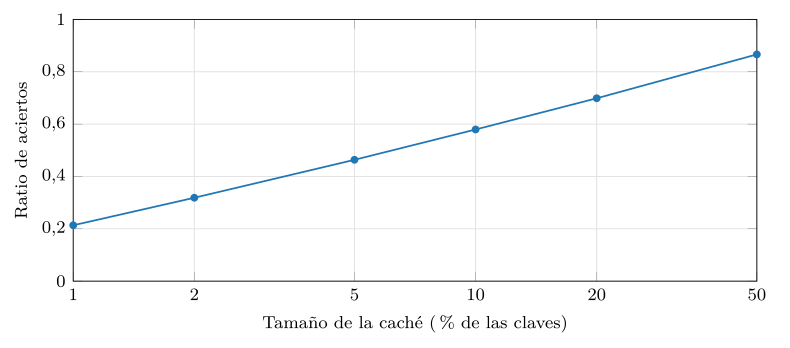
src/cap08_familias.py.Qué se expulsa cuando la caché se llena es una decisión con nombre propio, y los motores clave-valor ofrecen varias políticas (listado 8.3). La más común, LRU, expulsa lo menos recientemente usado, apostando a que lo reciente se volverá a pedir; LFU expulsa lo menos frecuentemente usado, mejor para popularidades estables; y la expulsión por TTL deja morir lo que caduca, ideal cuando el dato tiene una validez natural —una sesión, un precio que se recalcula cada hora—. La elección afecta al ratio de aciertos de la figura anterior: bajo Zipf estable, LFU suele acertar algo más que LRU, pero LRU se adapta mejor cuando la popularidad cambia con el tiempo.
CONFIG SET maxmemory-policy allkeys-lru # menos reciente
CONFIG SET maxmemory-policy allkeys-lfu # menos frecuente
EXPIRE precio:9 3600 # o dejar que caduque (TTL)Listado 8.3. Politicas de expulsion en un almacen clave-valor: LRU, LFU o por caducidad (TTL).
ZADD ranking 1500 "ada" # puntuacion en un conjunto ordenado
ZADD ranking 1800 "bru"
ZREVRANGE ranking 0 2 WITHSCORES # los 3 mejores, ya ordenados
INCR tasa:ip:1.2.3.4 # +1 peticion de esta IP
EXPIRE tasa:ip:1.2.3.4 60 # la ventana dura 60 s
# si INCR supera el limite antes de caducar, se rechazaListado 8.4. Estructuras sobre clave-valor (Redis): un ranking (conjunto ordenado) y un limitador de tasa (contador que caduca).
Documental: el agregado consultable
La familia documental, ya presentada en el capítulo 6, levanta la opacidad del valor: guarda documentos —árboles anidados, típicamente JSON— cuya estructura interna la base sí conoce y puede consultar (figura 8.6). Es el punto medio entre la opacidad del clave-valor y el esquema rígido del relacional: el documento es un agregado autocontenido que se lee y escribe de una pieza, pero por cuyos campos —incluidos los embebidos y las listas— se puede preguntar e indexar.
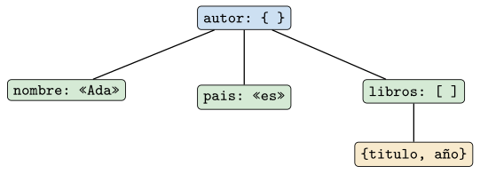
libros.Como el capítulo 6 midió ya su compromiso —el documento embebido gana al leer el agregado completo y pierde al cruzar muchos agregados— aquí basta recordar el repertorio y el criterio. MongoDB (MongoDB, Inc. 2024) consulta por campo, proyecta partes del documento, actualiza campos anidados y agrega con una canalización (listado 8.6); y la decisión de modelado clave —embeber o referenciar— se resuelve, como se vio, según lo que se lea junto. La familia documental es la respuesta cuando los datos tienen forma de agregado de estructura variable y se acceden por ese agregado.
Cuando sí hace falta cruzar agregados, los motores documentales ofrecen una canalización de agregación: una secuencia de etapas —filtrar, desplegar listas, agrupar, ordenar— por las que el dato fluye, e incluso una reunión explícita entre colecciones (listado 8.5). Es potente, pero su existencia confirma la regla: si la carga se apoya constantemente en esa reunión, el documento está trabajando contra su diseño, y un relacional —hecho para reunir— sería mejor elección.
db.pedido.aggregate([
{ $match: { estado: "pagado" } }, // filtrar
{ $unwind: "$lineas" }, // desplegar la lista
{ $group: { _id: "$lineas.producto",
vendidas: { $sum: "$lineas.cantidad" } } }, // agrupar
{ $sort: { vendidas: -1 } } // ordenar
])Listado 8.5. Una canalizacion de agregacion documental: desplegar, agrupar y ordenar; reunir colecciones es posible pero a contracorriente.
db.autor.find({ "libros.titulo": "obra 0001" }) // por campo embebido
db.autor.find({ _id: 1 }, { nombre: 1 }) // proyeccion
db.autor.aggregate([{ $group: { _id: "$pais",
n: { $sum: 1 } } }]) // agregacionListado 8.6. Operaciones documentales (estilo MongoDB): consultar por campo embebido, proyectar y agregar.
Columnar ancha: la escritura masiva
La familia columnar ancha —o de familias de columnas— es la heredera de Bigtable (Chang et al. 2008), y su representante abierto es Cassandra (Lakshman y Malik 2010). Conviene deshacer de entrada una confusión muy común: «columnar ancha» no es lo mismo que el almacén «orientado a columnas» de la analítica (sección 8.5). Aquí la fila sigue junta, pero es ancha y dispersa: cada fila se identifica por una clave de partición —que decide en qué nodo vive— y agrupa muchísimas columnas, a menudo distintas de una fila a otra, ordenadas por una clave de agrupamiento (figura 8.7).
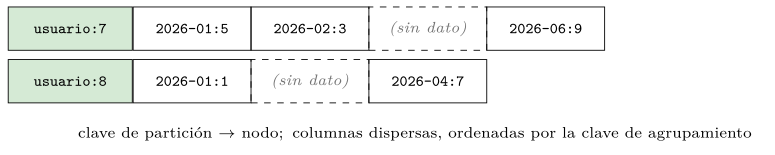
Su fuerza es la escritura masiva y la escalabilidad horizontal. Por dentro, los datos se acumulan en estructuras optimizadas para escribir —los árboles LSM (log-structured merge)—, y conviene entender por qué hacen la escritura tan barata. En lugar de buscar el sitio del dato en disco y sobrescribirlo —lo que exige una lectura previa y un acceso aleatorio, caros—, una escritura LSM se limita a añadir el dato a un registro en memoria que, cuando se llena, se vuelca al disco de una vez, de forma secuencial; los volcados se compactan después, en segundo plano, fundiendo y ordenando. Escribir se convierte así en añadir al final —la operación más rápida de un disco, como vimos en el capítulo 5 con el registro de transacciones—, y por eso absorber millones de escrituras por segundo, repartidas por la clave de partición entre muchos nodos, es su terreno: series de eventos, registros de actividad, telemetría. El precio se paga al leer, que a veces ha de mirar en varios volcados aún sin compactar. La figura 8.8 esquematiza esa ruta de escritura: a memoria primero, a disco en bloques, y compactación después.
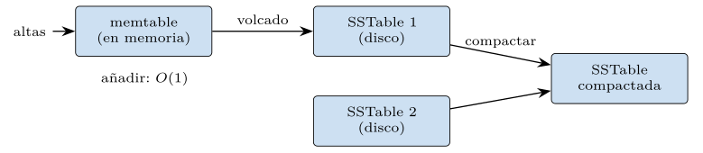
La ventaja se mide (figura 8.9). La práctica compara añadir un registro al final de un log —lo que hace un árbol LSM— con insertarlo en una estructura ordenada en el sitio —lo que hace un árbol B, el índice clásico del capítulo 3—. Añadir al final cuesta lo mismo haya mil registros o un millón: una línea plana. Insertar manteniendo el orden obliga a desplazar los datos posteriores, y su coste crece con el tamaño ya almacenado, hasta ser miles de veces más lento con un millón de registros. Esa diferencia es la que permite a la columnar ancha absorber escrituras a un ritmo que un motor de actualización en el sitio no alcanza; el contraste con el índice B-árbol del capítulo 3 es exacto: lo que acelera las lecturas por rango encarece las altas, y al revés.
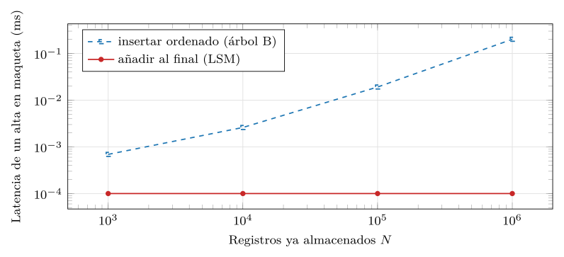
src/cap08_familias.py.Esa baratura de la escritura no es gratis: se paga en tres amplificaciones que conviene nombrar (tabla 8.1). La de escritura —los datos se reescriben varias veces al compactarse—, la de lectura —una consulta puede tener que mirar en varios volcados aún sin fundir— y la de espacio —conviven copias y versiones hasta que la compactación las limpia—. Afinar la compactación es elegir el punto entre estas tres: compactar más a menudo abarata la lectura y el espacio a costa de más escritura, y al revés. Es el mismo tipo de balanza —no hay almuerzo gratis— que recorre todo el libro.
| Amplificación | Qué la causa |
|---|---|
| De escritura | los datos se reescriben en cada compactación |
| De lectura | una consulta puede mirar en varios volcados sin fundir |
| De espacio | conviven versiones y borrados hasta que se compactan |
En CQL, su lenguaje, el diseño empieza por la consulta: se declara la tabla con su clave de partición y su orden de agrupamiento pensando en cómo se va a leer, porque —fiel a la lección del capítulo 6— el modelo documental y el columnar diseñan para la consulta, no para el dato (listado 8.7).
CREATE TABLE actividad (
usuario int, -- clave de particion: decide el nodo
instante timestamp, -- clave de agrupamiento: ordena la fila
evento text,
PRIMARY KEY (usuario, instante)
) WITH CLUSTERING ORDER BY (instante DESC);
-- lee barato: todo de un usuario, ya ordenado por tiempo, en un nodo
SELECT * FROM actividad WHERE usuario = 7 LIMIT 50;Listado 8.7. Columnar ancha en CQL: clave de particion (reparte) y de agrupamiento (ordena dentro de la particion).
Que el diseño empiece por la consulta tiene una consecuencia que choca a quien viene del relacional: se desnormaliza a propósito, manteniendo una tabla por cada patrón de lectura. Si hace falta consultar la actividad por usuario y también por tipo de evento, no se crea una tabla normalizada y se confía en el optimizador —no hay reuniones a escala—, sino que se escriben las dos tablas, cada una con la clave de partición que su consulta necesita (listado 8.8). La escritura, que es lo barato en esta familia, se duplica para que las dos lecturas sean baratas; es la desnormalización razonada del capítulo 4 llevada al extremo, y la coherencia entre las copias recae en la aplicación.
-- consulta 1: actividad de un usuario, por tiempo
CREATE TABLE actividad_por_usuario (
usuario int, instante timestamp, evento text,
PRIMARY KEY (usuario, instante));
-- consulta 2: quien hizo cierto evento (otra clave de particion)
CREATE TABLE actividad_por_evento (
evento text, instante timestamp, usuario int,
PRIMARY KEY (evento, instante));
-- cada escritura va a AMBAS tablas; cada lectura, a la suyaListado 8.8. Modelado por consulta en Cassandra: una tabla por patron de lectura, desnormalizando a proposito.
Su debilidad es la otra cara: como se modela por consulta, una pregunta no prevista —que no encaje con la clave de partición— obliga a un barrido caro de todo el clúster o a mantener otra tabla con los mismos datos ordenados de otro modo. La columnar ancha cambia flexibilidad de consulta por capacidad de escritura y escala; es la elección cuando el volumen de escritura es enorme y los patrones de lectura, conocidos de antemano.
Grafo: el recorrido de relaciones
La cuarta familia invierte la prioridad de todas las anteriores: hace de las relaciones ciudadanos de primera clase. En un grafo de propiedades, los nodos son entidades y las aristas son relaciones con tipo y propiedades, recorribles directamente (figura 8.10). Neo4j (Robinson et al. 2015; Neo4j, Inc. 2024) es su representante, y su lenguaje, Cypher, describe patrones de nodos y aristas que el motor recorre saltando de vecino en vecino. Ese estilo declarativo de Cypher —describir un patrón de nodos y aristas y dejar que el motor lo case— inspiró GQL (ISO/IEC 39075:2024) (ISO/IEC 2024), el primer lenguaje de consulta de grafos independiente estandarizado por ISO y la primera norma ISO de un lenguaje de consulta nuevo desde el propio SQL; es el hermano autónomo del SQL/PGQ que el capítulo 3 mencionó, aquella extensión de grafos dentro de SQL.
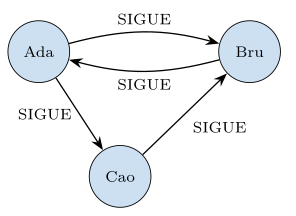
SIGUE). El recorrido sigue las aristas directamente, sin reunir tablas.La fuerza del grafo es justo lo que el relacional hace caro: las consultas sobre relaciones muy conectadas. «Amigos de amigos de amigos», «el camino más corto entre dos personas», «qué productos compraron quienes compraron este» son recorridos que en SQL degeneran en cadenas de reuniones cada vez más caras, una por nivel de profundidad. El grafo, en cambio, sigue las aristas por su lista de adyacencia: llegar a los vecinos de un nodo cuesta lo que esos vecinos, no lo que la tabla entera. La consulta de amigos de amigos en Cypher es una sola línea legible (listado 8.9), frente a una reunión repetida por cada salto.
MATCH (yo:Persona {nombre: "Ada"})-[:SIGUE*2]->(faf:Persona)
RETURN DISTINCT faf.nombre
// *2 = exactamente dos saltos de SIGUE: amigos de mis amigosListado 8.9. Amigos de amigos en Cypher (Neo4j): un patron de recorrido, no una cadena de reuniones.
Y la diferencia se mide (figura 8.11). La práctica compara recorrer el grafo por su lista de adyacencia con emular la reunión sin índice —que en cada salto ha de barrer todas las aristas—. Al crecer la profundidad del recorrido, la reunión se encarece salto a salto, mientras que la adyacencia sigue de cerca el tamaño del frente explorado, varios órdenes de magnitud por debajo. Esa distancia, que crece con la profundidad, es la razón de ser de la familia: cuando las preguntas son sobre cómo se conectan las cosas, el grafo gana.
La traza del listado 8.10 hace ver de dónde sale la diferencia. Para llegar a profundidad tres desde un nodo, la adyacencia visita solo el frente que crece —los vecinos, luego los vecinos de los vecinos—, mientras que la reunión sin índice recorre las aristas enteras en cada uno de los tres saltos, mire o no a los nodos relevantes. La primera paga lo que explora; la segunda, el tamaño de la tabla por cada nivel.
adyacencia (visita el frente) reunion (rebarre E aristas)
salto 1: 6 vecinos salto 1: barre 18000 aristas
salto 2: ~35 nuevos salto 2: barre 18000 aristas
salto 3: ~210 nuevos salto 3: barre 18000 aristas
total: ~250 nodos tocados total: 54000 aristas tocadasListado 8.10. Traza de amigos de amigos a profundidad 3: la adyacencia sigue al frente; la reunion rebarre todas las aristas en cada salto.
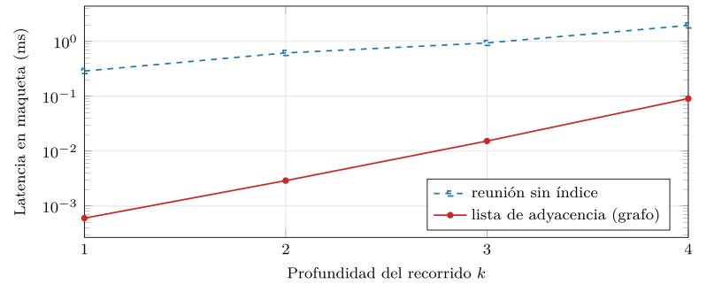
src/cap08_familias.py.El recorrido no se limita a la profundidad fija: Cypher expresa con la misma naturalidad el camino más corto entre dos nodos o la recomendación por vecindad (listado 8.11), consultas que en SQL serían procedimientos recursivos enrevesados. Esa expresividad sobre las relaciones es lo que define a la familia: la pregunta «cómo se conectan estas cosas» se escribe casi como se piensa.
// camino mas corto entre dos personas
MATCH p = shortestPath((a:Persona {nombre:"Ada"})
-[:SIGUE*]-(b:Persona {nombre:"Cao"}))
RETURN p
// "quien compro esto, compro tambien...": recomendacion por vecindad
MATCH (:Producto {id:1})<-[:COMPRO]-(:Cliente)-[:COMPRO]->(otro:Producto)
RETURN otro.nombre, count(*) AS veces ORDER BY veces DESCListado 8.11. Camino mas corto y recomendacion por vecindad en Cypher: recorridos que en SQL serian recursion enrevesada.
Su debilidad aparece cuando no hay relaciones que recorrer: para una carga de simples lecturas por clave o de agregaciones masivas, el grafo no aporta nada y sí añade complejidad. Además, los grafos muy grandes son difíciles de repartir entre nodos sin cortar aristas, lo que tensa la distribución del capítulo 9. El grafo, como anticipo, reaparecerá en la Parte III: las estructuras de nodos y relaciones son parientes de las representaciones que allí se usarán, y el GraphRAG de la Parte V volverá a unir grafo y similitud.
Familias especializadas en el mapa
Junto a las cuatro canónicas, el panorama actual incluye familias especializadas que viven en ejes ortogonales al de este libro pero que conviene situar, aunque no se desarrollen. La más importante para entender la confusión terminológica del columnar es la analítica.
OLAP orientado a columnas
El almacén orientado a columnas —C-Store (Stonebraker et al. 2005) y sus herederos ClickHouse y DuckDB— es lo que la analítica (OLAP) usa, y es distinto de la columnar ancha de Cassandra. Aquí el dato se guarda físicamente por columnas: todos los valores de una columna, contiguos, en lugar de todas las columnas de una fila juntas (figura 8.12). La razón es la agregación: una consulta analítica típica —«la suma de ventas por mes»— toca una o dos columnas de millones de filas, y leer solo esas columnas, contiguas, es mucho más rápido que arrastrar filas enteras.
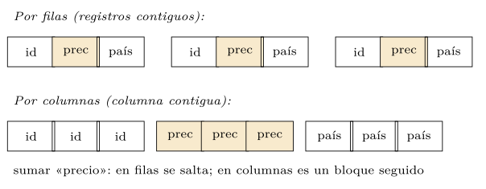
La diferencia se mide (figura 8.13). La práctica suma una columna sobre cien mil filas, almacenadas por filas —hay que recorrer la fila entera para llegar a la columna— y por columnas —se lee solo la pedida—. El coste del almacén por filas crece linealmente con el número de columnas de la tabla, porque arrastra todas; el del orientado a columnas se mantiene casi plano, indiferente a cuántas columnas tenga la tabla, porque solo toca una. Esa es la ventaja que hace de ClickHouse o DuckDB la herramienta de la analítica, y la consulta se escribe en SQL corriente (listado 8.13).
El listado 8.12 pone números a la diferencia para una tabla de un millón de filas y diez columnas, de la que se quiere sumar una. El almacén por filas ha de leer las diez columnas de cada fila para llegar a la que importa —diez millones de valores leídos para usar uno de cada diez—; el orientado a columnas lee solo la columna pedida —un millón de valores, contiguos—. Una décima parte de los datos leídos, y además de forma secuencial: por eso la analítica vive en almacenes por columnas.
por filas: 1.000.000 filas x 10 columnas = 10.000.000 valores leidos
(se usa 1 de cada 10; el resto se arrastra en balde)
por columnas: 1.000.000 valores leidos (la columna)
(10x menos datos, y ademas contiguos en disco)Listado 8.12. Traza de sumar una columna (1 millon de filas, 10 columnas): datos leidos por filas frente a por columnas.
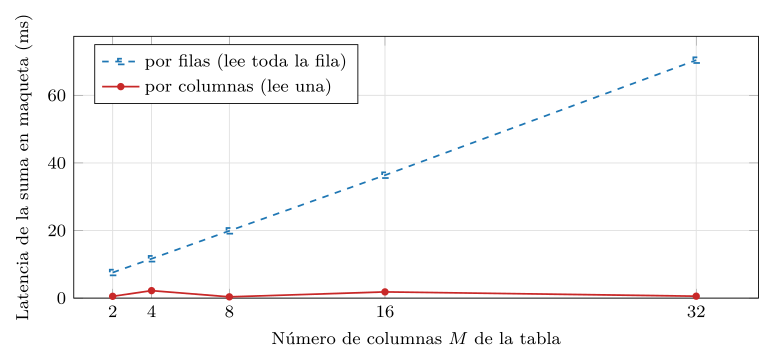
src/cap08_familias.py.SELECT mes, sum(ventas) AS total
FROM hechos
GROUP BY mes
ORDER BY mes;Listado 8.13. Una agregacion analitica (estilo DuckDB/ClickHouse): toca pocas columnas de muchas filas.
Otras familias del mapa
El mapa se completa con tres familias más, cada una afinada a un eje propio (tabla 8.2). La serie temporal —InfluxDB, TimescaleDB— optimiza datos indexados por tiempo, con operaciones nativas de ventana e intervalos (listado 8.14). El SQL distribuido o NewSQL —CockroachDB, Spanner— conserva SQL y las transacciones ACID a escala horizontal, como se vio en el capítulo 5. Y el geoespacial —PostGIS sobre PostgreSQL— añade tipos e índices para consultas por proximidad y contención en el espacio. Ninguna sustituye a las canónicas; cada una es la respuesta cuando ese eje —el tiempo, la escala transaccional, el espacio— domina la carga.
| Familia | Ejemplos | Eje que optimiza |
|---|---|---|
| Orientada a columnas | ClickHouse, DuckDB | agregación analítica (OLAP) |
| Serie temporal | InfluxDB, TimescaleDB | datos indexados por tiempo |
| SQL distribuido | CockroachDB, Spanner | SQL y ACID a escala horizontal |
| Geoespacial | PostGIS | proximidad y contención espacial |
SELECT time_bucket('1 hour', instante) AS hora,
avg(temperatura)
FROM sensores
WHERE instante > now() - interval '1 day'
GROUP BY hora ORDER BY hora;Listado 8.14. Una consulta de serie temporal (estilo TimescaleDB): agregar por intervalos de tiempo.
Cada una de estas familias merece una nota, porque su existencia matiza la idea de que «NoSQL» es un bloque. La serie temporal no es solo una tabla con una columna de fecha: optimiza el hecho de que los datos llegan ordenados por tiempo y casi nunca se modifican, solo se añaden y se consultan por ventanas. Eso permite trucos que un relacional general no hace: comprimir agresivamente los bloques antiguos, descartar automáticamente lo más viejo que cierto umbral (retención), y mantener resúmenes precalculados que se actualizan solos (listado 8.15). Para telemetría, métricas o sensores —millones de puntos por segundo que se consultan agregados— esa especialización es la diferencia entre viable e inviable.
-- resumen por hora que el motor mantiene al dia automaticamente
CREATE MATERIALIZED VIEW metricas_hora
WITH (timescaledb.continuous) AS
SELECT time_bucket('1 hour', instante) AS hora,
avg(valor), max(valor)
FROM metricas GROUP BY hora;
-- descartar automaticamente lo anterior a 30 dias
SELECT add_retention_policy('metricas', INTERVAL '30 days');Listado 8.15. Serie temporal (estilo TimescaleDB): un resumen continuo que se actualiza solo, y una politica de retencion.
El geoespacial —PostGIS sobre PostgreSQL— añade tipos para puntos, líneas y polígonos e índices espaciales (árboles R) que hacen baratas las preguntas por proximidad y contención: «los cajeros a menos de un kilómetro», «en qué barrio cae este punto» (listado 8.16). Sin ese índice, responder exigiría calcular la distancia a todos los puntos; con él, el árbol R descarta de golpe las regiones lejanas, igual que el B-árbol del capítulo 3 descartaba las filas fuera de rango. Es el mismo principio del índice —acelerar la búsqueda restringiendo el espacio que se mira— aplicado a dos dimensiones, y anticipa el índice vectorial de la cuarta parte, que lo llevará a cientos de dimensiones.
SELECT nombre
FROM cajeros
WHERE ST_DWithin(ubicacion, ST_MakePoint(-3.70, 40.42)::geography, 1000)
ORDER BY ubicacion <-> ST_MakePoint(-3.70, 40.42)::geography
LIMIT 5; -- el operador <-> ordena por distancia usando el indiceListado 8.16. Geoespacial (estilo PostGIS): los puntos a menos de un kilometro, con indice espacial.
Esta última observación no es casual: el salto del índice unidimensional (capítulo 3) al bidimensional (geoespacial) y de ahí al de alta dimensión (vectorial, Parte IV) es uno de los hilos que cosen el libro, y el geoespacial es su escalón intermedio. Ese escalón final —el almacén vectorial— ha dejado de ser una promesa: impulsado por los grandes modelos de lenguaje y la recuperación aumentada (Lewis et al. 2020), se ha consolidado en la primera mitad de los años veinte como una familia especializada de pleno derecho —Milvus, Qdrant o la extensión pgvector sobre PostgreSQL—, y por eso este libro, lejos de relegarla a una nota al pie, le dedica toda su cuarta parte.
Un dominio, cuatro familias
Nada fija el criterio del capítulo como ver un mismo dominio repartido entre las familias según el patrón de acceso de cada parte. Tómese una red social, con cuatro necesidades distintas, y modélese cada una donde rinde —la persistencia políglota del capítulo 6 en acción.
La sesión del usuario y sus contadores volátiles son acceso por clave: clave-valor, con caducidad (listado 8.17).
SET sesion:42 "{token, expira}" EXPIRE sesion:42 3600
INCR notificaciones:42 # contador volatil por usuarioListado 8.17. La sesión y los contadores: clave-valor.
El perfil con sus datos de forma variable es un agregado: documental, leído de una pieza (listado 8.18).
db.perfil.findOne({ _id: 42 })
// { _id:42, nombre:..., bio:..., enlaces:[...], preferencias:{...} }Listado 8.18. El perfil de forma variable: documental.
El muro de actividad, con su escritura masiva y su lectura por usuario y tiempo, es columnar ancha (listado 8.19).
SELECT * FROM actividad WHERE usuario = 42
ORDER BY instante DESC LIMIT 50; -- todo en un nodo, ya ordenadoListado 8.19. El muro de actividad: columnar ancha.
Y la red de seguidores, con sus recorridos de «a quién sigue a quién», es un grafo (listado 8.20).
MATCH (:Persona {id:42})-[:SIGUE*2]->(sugerido)
RETURN sugerido LIMIT 10 // a quien seguir: amigos de mis amigosListado 8.20. La red de seguidores: grafo.
Ninguna de las cuatro familias sirve bien las otras tres necesidades: una caché no recorre la red, un grafo no absorbe la telemetría, un columnar no consulta el perfil por campos. La misma aplicación las usa todas, cada una en su fuerte, y la coherencia entre ellas —que el contador de notificaciones cuadre con la actividad, que el perfil exista para cada nodo del grafo— es la responsabilidad que la persistencia políglota traslada al diseñador. El capítulo siguiente mostrará la mecánica que permite que cada una de esas piezas se reparta, a su vez, entre muchos nodos.
Práctica: cada familia en su fuerte
Las tres gráficas anteriores salen de un mismo módulo, src/cap08_familias.py —Python puro, sin servicio ni GPU, según la tabla de recursos—, que implementa maquetas en memoria de cada modelo y cronometra la operación que cada familia hace bien frente a la que le cuesta (listado 8.21). No pretende reproducir el rendimiento absoluto de Redis, Cassandra o Neo4j —para eso están los servicios de infra/—, sino aislar, en el modelo de datos desnudo, el porqué de cada fortaleza: el acceso constante de la tabla hash, el salto barato de la adyacencia, la lectura de una sola columna.
def main():
anunciar() # recursos: python puro, cpu, sin gpu
simular_clavevalor() # hash vs barrido -> cap08_clavevalor.dat
simular_columnar() # columnas vs filas -> cap08_columnar.dat
simular_grafo() # adyacencia vs reunion -> cap08_grafo.dat
simular_escritura() # anadir vs insertar -> cap08_escritura.dat
simular_cache() # aciertos LRU/Zipf -> cap08_cache.dat
demostracion(15) # 15 claves al azar con su valorListado 8.21. El motor del experimento: maquetas en memoria de cada familia, con semilla fija para reproducir las curvas.
Las cifras medidas hablan por sí solas. En el acceso por clave, la tabla hash se mantiene en torno a \(9\times10^{-5}\) ms sea cual sea el tamaño, mientras el barrido pasa de \(0{,}002\) ms con cien claves a \(2{,}3\) ms con cien mil —cuatro órdenes de magnitud de diferencia en el peor caso—. En la agregación, sumar una columna por filas trepa de \(7{,}6\) a \(70\) ms al crecer de dos a treinta y dos columnas, mientras por columnas se queda en torno a medio milisegundo, plana. Y en el grafo, los «amigos de amigos» a profundidad cuatro cuestan \(0{,}09\) ms por adyacencia frente a \(1{,}96\) ms por reunión, una distancia que crece con la profundidad. A ellas se suman las dos medidas de los modos de escritura y de caché: añadir al final se mantiene en torno a \(10^{-4}\) ms con un registro o con un millón, mientras insertar ordenado trepa hasta \(0{,}20\) ms; y una caché LRU del 10 % de las claves acierta el 58 % de las peticiones bajo acceso Zipf, subiendo al 87 % con el 50 %. Cinco modelos, cinco formas de coste, cada una favorable a su familia.
La tabla siguiente las reúne: para cada medida, qué hace crecer el coste y qué lo mantiene plano, y la familia que esa forma favorece. Leídas juntas, son el argumento cuantitativo del capítulo entero.
| Medida | Crece con | Plano / barato | Favorece a |
|---|---|---|---|
| Acceso por clave | el barrido (\(N\)) | la tabla hash | clave-valor |
| Agregación | leer por filas (\(M\)) | leer por columnas | OLAP columnar |
| Recorrido | la reunión (\(k\)) | la adyacencia | grafo |
| Escritura | insertar ordenado | añadir al final | columnar ancha |
| Caché (Zipf) | (sube el acierto) | basta poca caché | clave-valor |
El corazón de cada medida es deliberadamente mínimo, para que se vea que la ventaja está en el modelo y no en un truco de implementación. El recorrido del grafo, por ejemplo, es una expansión de frente por la lista de adyacencia, frente a una reunión que en cada salto rehace el barrido de todas las aristas (listado 8.22); la diferencia entre las dos no es de constantes, sino de a qué crece cada una.
# grafo: saltar a los vecinos por la adyacencia
for u in frontera:
for v in ady[u]:
if v not in vistos: nueva.add(v)
# reunion sin indice: recorrer TODAS las aristas cada salto
frontera = {b for (a, b) in aristas if a in frontera}Listado 8.22. El nucleo de la medida del grafo: saltar a los vecinos frente a barrer todas las aristas en cada salto.
El mismo principio gobierna la medida columnar (listado 8.23): sumar una columna en el almacén por filas obliga a recorrer cada fila entera —todas sus columnas— antes de quedarse con la que interesa, mientras que en el orientado a columnas se lee solo la columna pedida. La diferencia no es una constante de implementación, sino la cantidad de datos que cada disposición obliga a tocar: \(N\cdot M\) frente a \(N\).
# por filas: recorrer la fila entera (las M columnas) por cada registro
for fila in por_filas:
for v in fila:
s += v
# por columnas: leer solo la columna pedida
s = sum(por_columnas[0])Listado 8.23. El nucleo de la medida columnar: leer la fila entera frente a leer una sola columna.
Las dos medidas nuevas siguen la misma economía de un núcleo mínimo. La de escritura contrapone añadir al final —coste constante— con insertar manteniendo el orden —que desplaza la cola (listado 8.24)—; la de caché recorre un acceso sesgado contra una caché LRU y cuenta los aciertos (listado 8.25). En ambos casos, lo que se mide es una propiedad del modelo —dónde se escribe, qué se cachea—, no una astucia de programación.
# escritura: anadir al final (LSM) vs insertar ordenado (arbol B)
log.append(x) # O(1), indiferente al tamano
i = bisect.bisect_left(ordenado, x); ordenado.insert(i, x) # O(n)Listado 8.24. Nucleos de las medidas de escritura y de cache.
if k in cache: # acierto
aciertos += 1; cache.move_to_end(k)
else: # fallo: entra y, si rebosa, expulsa el viejo
cache[k] = 1
if len(cache) > cap: cache.popitem(last=False)Listado 8.25. El nucleo de la medida de cache: LRU sobre un acceso sesgado, contando los aciertos.
Una caché clave-valor en treinta líneas
Para que se vea que el modelo clave-valor no esconde magia, conviene construir uno mínimo pero completo: una caché con acceso por clave, caducidad (TTL) y expulsión del menos reciente (LRU) cuando se llena (listado 8.26). Son las tres piezas de la sección 8.1 —acceso \(O(1)\), TTL, política de expulsión— en una clase de Python que cualquier lector puede leer de un vistazo. No es Redis, claro: le faltan la persistencia, la concurrencia y la red; pero el modelo de datos —clave a valor, con caducidad y expulsión— está entero, y es ese modelo, no la ingeniería que lo rodea, el que explica las curvas medidas.
from collections import OrderedDict
class Cache:
def __init__(self, capacidad, reloj):
self.cap = capacidad
self.reloj = reloj # funcion que da el tiempo actual
self.datos = OrderedDict() # clave -> (valor, caduca_en)
def get(self, clave):
item = self.datos.get(clave)
if item is None:
return None # fallo
valor, caduca = item
if caduca is not None and self.reloj() >= caduca:
del self.datos[clave] # habia caducado (TTL)
return None
self.datos.move_to_end(clave) # uso reciente (LRU)
return valor # acierto: O(1)
def set(self, clave, valor, ttl=None):
caduca = None if ttl is None else self.reloj() + ttl
self.datos[clave] = (valor, caduca)
self.datos.move_to_end(clave)
if len(self.datos) > self.cap:
self.datos.popitem(last=False) # expulsa el menos recienteListado 8.26. Una cache clave-valor con TTL y expulsion LRU; el modelo entero en una clase pequena.
Esta clase reúne, en un solo sitio, todo lo que el capítulo ha dicho de la familia clave-valor: el acceso por la clave y solo por ella, la caducidad que evita servir datos rancios y la expulsión que mantine la caché dentro de su tamaño. Cambiar popitem(last=False) por una política por frecuencia la convertiría en LFU; añadir un archivo de respaldo, en un almacén persistente. El modelo es el punto de partida; lo demás es ingeniería sobre él.
La demostración: quince claves con su valor
Fiel a la convención, el módulo muestra quince claves al azar de un almacén clave-valor con su valor (listado 8.27): pares sesión\(\to\)usuario, la forma más simple de dato que existe y, justamente por simple, la más rápida de servir. Es el contrapunto de la demostración del capítulo 7 —allí, quince lecturas que podían ser obsoletas; aquí, quince lecturas por clave que nunca fallan porque no hay réplica que reconciliar.
clave valor
-------------- -------
sesion:1353 user-24
sesion:1182 user-21
sesion:1183 user-88
sesion:1484 user-5
sesion:1138 user-48
... ...Listado 8.27. Quince claves al azar de un almacen clave-valor con su valor (muestra): el dato mas simple y el acceso mas rapido.
Lo que la práctica no decide
Las maquetas miden la forma del coste de cada modelo —constante, lineal, exponencial con la profundidad—, no el rendimiento absoluto de un motor real, que depende de su implementación, su almacenamiento y su despliegue. Tampoco deciden la familia: muestran qué patrón de acceso favorece cada modelo, pero cuál de esos patrones domina en una aplicación es una cuestión de su carga, no de la medida. Y, sobre todo, la elección rara vez es de una sola familia: como adelantó el capítulo 6, los sistemas reales practican la persistencia políglota, combinando varias —una clave-valor de caché, un documental de catálogo, un grafo de recomendación— cada una en su fuerte. La herramienta ayuda a entender por qué cada familia gana donde gana; la decisión de qué combinar la pone el diseñador que conoce la carga.
Tan útil como saber cuándo usar cada familia es saber cuándo no, porque el error más común es forzar un modelo a un patrón que no es el suyo:
- Clave-valor
-
no, si hay que buscar por contenido o relacionar valores: acabaría recorriendo todas las claves, lo que el barrido de la figura 8.3 desaconseja.
- Documental
-
no, si la carga cruza constantemente muchos agregados: dominarían las consultas que el capítulo 6 vio caras, y un relacional serviría mejor.
- Columnar ancha
-
no, si las consultas son variadas e imprevistas: cada patrón nuevo pide otra tabla, y el modelado por consulta se vuelve inmanejable.
- Grafo
-
no, si apenas hay relaciones que recorrer: paga complejidad y reparto difícil sin usar su única ventaja.
Reconocer el antipatrón es la otra mitad del criterio: elegir bien es, a la vez, descartar lo que no encaja.
Síntesis y puente al capítulo siguiente
Este capítulo ha recorrido el catálogo de NoSQL como lo que es: un abanico de modelos de datos, cada uno afinado a un patrón de acceso. La clave-valor compra latencia mínima a cambio de no ver dentro del valor; la documental añade la consulta por los campos de un agregado autocontenido; la columnar ancha cambia flexibilidad por escritura masiva y escala; y el grafo hace baratos los recorridos de relaciones que el relacional encarece. Alrededor, las familias especializadas —la analítica orientada a columnas, la serie temporal, el SQL distribuido, la geoespacial— afinan ejes propios. Y las tres curvas medidas han mostrado que estas no son preferencias de estilo, sino diferencias de coste con forma propia: la línea plana del hash, el salto barato de la adyacencia, la lectura de una columna.
La tabla 8.3 condensa el catálogo en una sola vista: para cada familia canónica, la operación que hace barata, la que le resulta cara y el caso de uso emblemático. Es el resumen operativo del capítulo y la herramienta de decisión que el lector debería poder reconstruir.
| Familia | Barato | Caro | Caso |
|---|---|---|---|
| Clave-valor | acceso por clave (\(O(1)\)) | buscar por contenido | caché, sesiones |
| Documental | leer/escribir el agregado | cruzar agregados | catálogos |
| Columnar ancha | escritura masiva por clave | consulta no prevista | telemetría |
| Grafo | recorrer relaciones | lecturas sin relación | recomendación |
El lector se lleva el criterio que vertebra la segunda parte: la familia —o la combinación de familias— se elige por el patrón de acceso, no por moda, y elegir bien exige reconocer ese patrón antes que el producto. Pero todas estas familias comparten el supuesto que las hizo nacer, el de la escala, y ese supuesto exige repartirse de verdad entre muchos nodos. Cómo se hace ese reparto —cómo se decide qué dato va a qué nodo, cómo se replica para tolerar fallos, cómo se procesa lo que está repartido— es la mecánica de la distribución que el capítulo 9 desvela, y que convierte la promesa de escala de estas familias en un funcionamiento concreto. El hilo del libro, mientras tanto, sigue su curso: tras relajar el esquema (capítulo 6) y la consistencia (capítulo 7), el lector tiene ya los modelos con los que ese «igual a» relajado se almacena, a la espera de que la Parte III sustituya el «igual a» por el «cercano a».
Ejercicios propuestos
Lecturas recomendadas
Sadalage y Fowler (2012): la guía de las familias NoSQL y la persistencia políglota, con el criterio de elegir por modelo de datos que vertebra este capítulo.
Cattell (2011): una comparación ordenada de almacenes escalables que sirve de mapa del territorio de las familias.
Lakshman y Malik (2010): el artículo de Cassandra, que describe el modelo columnar ancho y su reparto por clave de partición.
Stonebraker et al. (2005): el diseño de C-Store, origen del almacén orientado a columnas de la analítica moderna.
Robinson et al. (2015): el tratamiento del modelo de grafo de propiedades y de las consultas de recorrido que el relacional hace caras.
Kleppmann (2017): el encuadre unificado de los modelos de datos y de cuándo conviene cada uno, con el detalle de implementación que aquí se esboza.